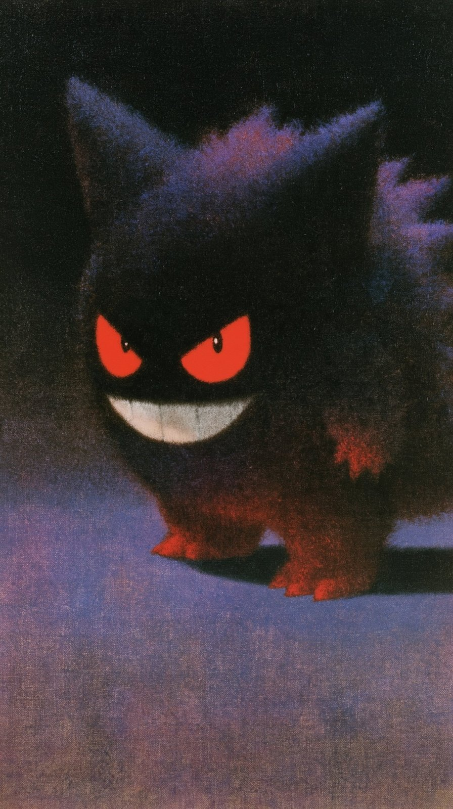
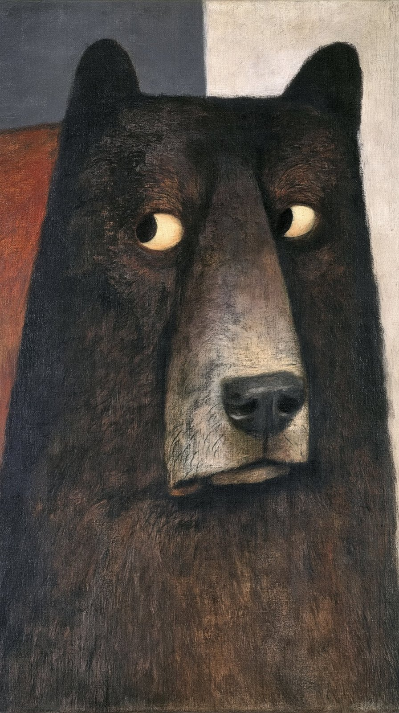
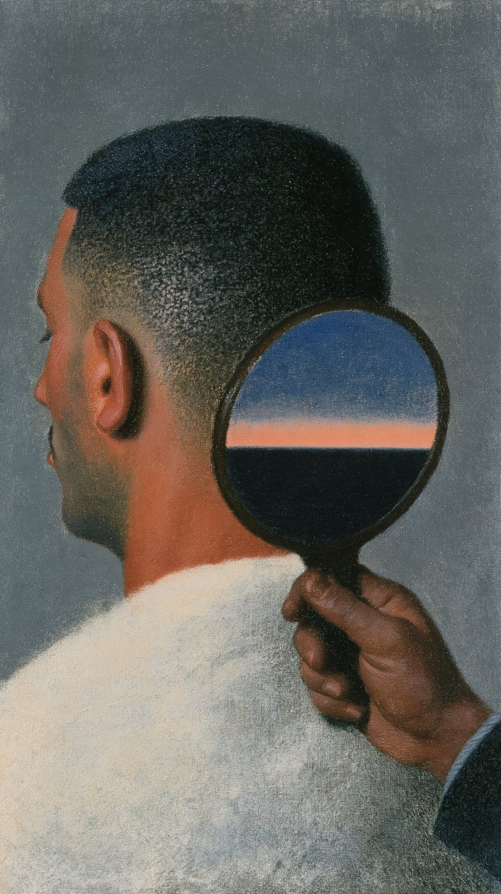

The Surprise
An oil-painted surreal scene: a pale figure in a tall pointed hat stands amid rows of dark hooded figures with orange caps.
| Creator | AlexandrIA @AleRVG |
|---|---|
| Platform | X |
| Model | — |
| Likes | 113 |
| Posted | 2026-10-07 |
| Visual style | Surreal / dreamcore |
| Regional vibe | No specific region |
| Genre | Fantasy / myth |
| Mood | Eerie / unsettling |
Prompt · from the post
--sref 1748030304 701349914::0.5 310387866::0.3 2645070458::0.7